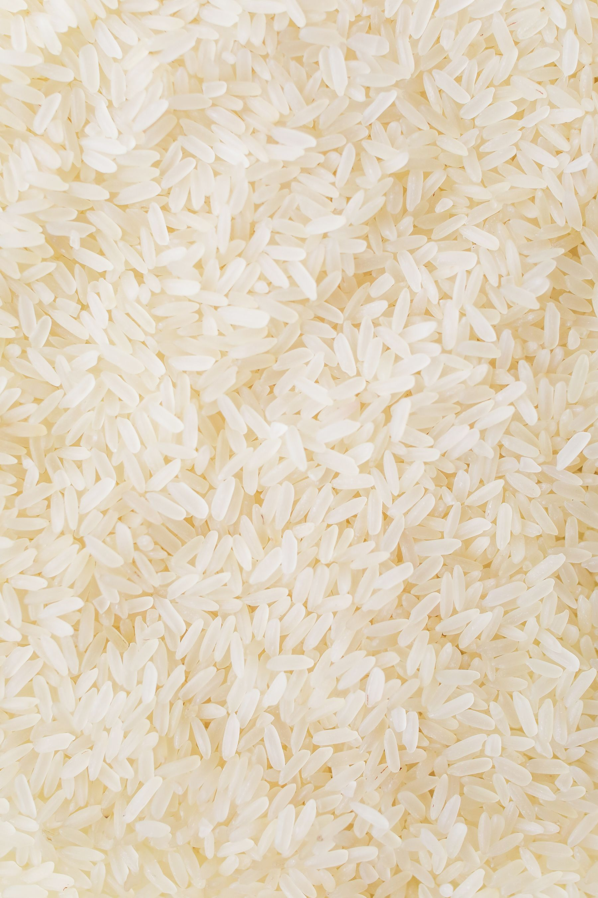
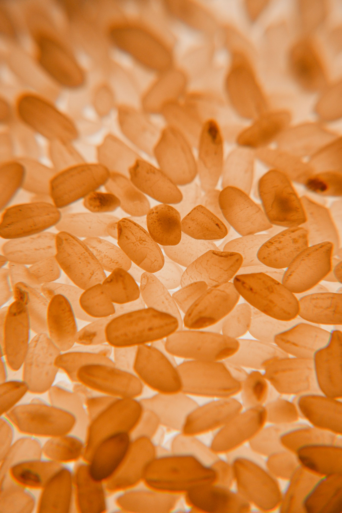
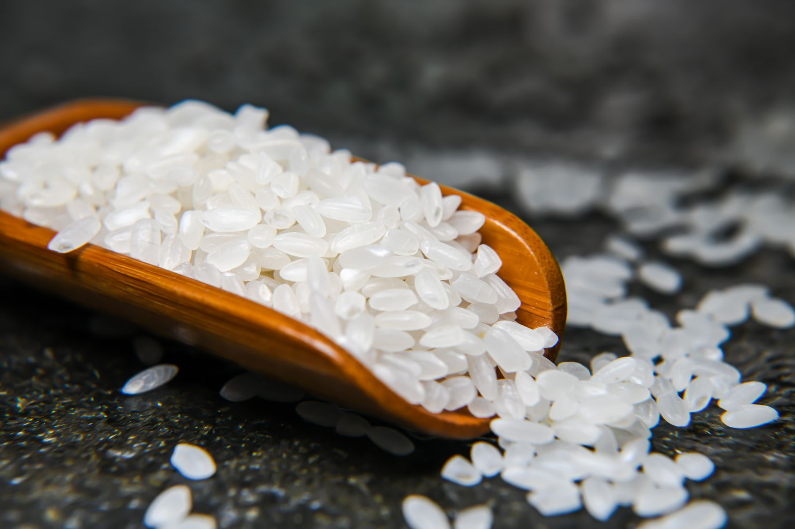
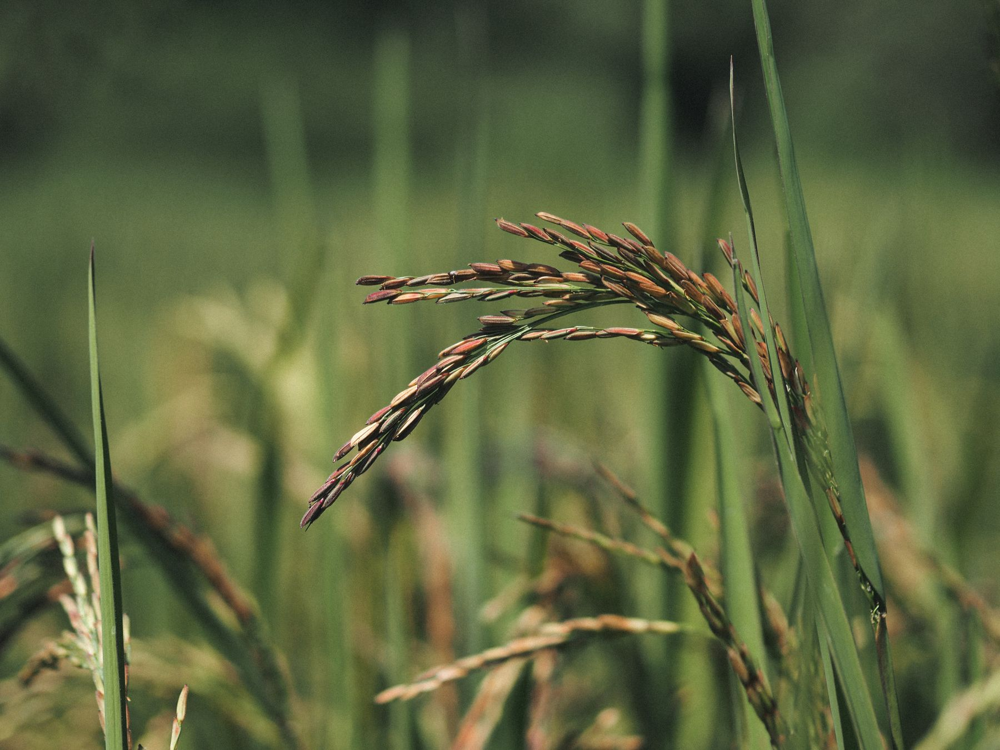

Processing
Processing appears in a public directory as part of Habbah’s rice value-chain role. Enquire directly for the company’s current scope.
Habbah Innovations Limited is a Ugandan enterprise. Public directory information identifies a role in the rice value chain spanning processing, milling and packaging.


Rice is not decoration here. It is the clearest public thread connecting Habbah to food and agriculture.
Follow the value-chain record ↗
The company is presented carefully: with a food-and-agriculture perspective and clear reference to public directory classifications, without turning those entries into unsupported claims.
Processing appears in a public directory as part of Habbah’s rice value-chain role. Enquire directly for the company’s current scope.
Milling is also directory-listed. No production capacity, equipment or operating facility is claimed on this website.
Packaging completes the recorded role. Current formats, availability and commercial terms can be confirmed by email.

One public directory places Habbah under accommodation and food-service activities, while another connects it to rice processing, milling and packaging. This site centres the food-and-agriculture connection without assuming a hotel, restaurant, catalogue or facility.
For current products, services and trading information, speak directly with the company.
Read about HabbahEmail Mwesi Y Habagaya for direct, up-to-date information.